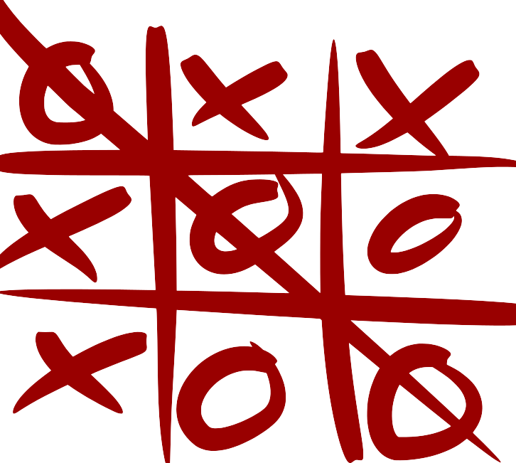

Explore My
Other Projects
FAKE NEWS DETECTION
The site aims to identify and reduce the spread of fake news
Python, machine learning (scikit-learn, TensorFlow), NLP, and web frameworks (Flask/Django) used
Users input news, the model analyzes it, and it classifies the news as real or fake based on trained datasets

TIC TAC TOE
The game provides a fun and interactive way to play Tic Tac Toe
Python and the Pygame library for game development
Players take turns to place their marks (X or O) on a 3x3 grid, and the game checks for a win or draw after each move
BOSTON HOUSE PRICE PREDICTION
The project aims to predict house prices in Boston based on various features
Python, machine learning, matplolib, seaborn
The model trains on historical housing data, analyzes features such as location and size, and predicts house prices based on these features